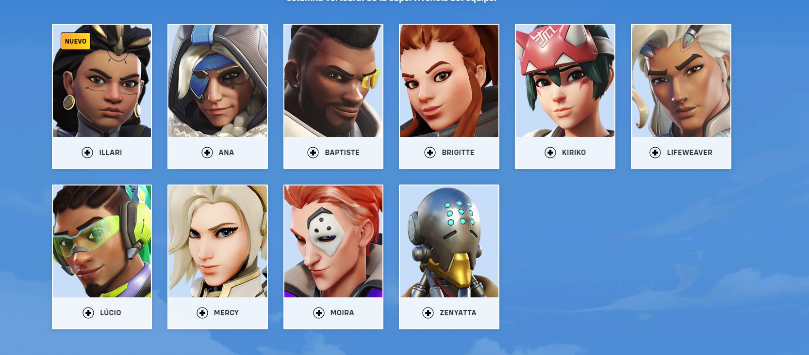

En el ambito de los personajes y sus habilidades unicas se llegan a dividir en tres diferentes roles.
Como primer punto tenemos el rol de tanque los cuales tienen habiliades para proteger al equipo, o para mantenerse mas tiempo con vida y darle espacio al equipo, son los personajes con mas vida del juego, ademas de que unicamente hay uno por equipo (en el overwatch 1 eran 2 de cada rol, pero se paso a ser un 5vs5 en lugar de 6vs6)

En segundo lugar tenemos los que en cantidad son la mayor parte de los personajes los de daño por segundo(DPS), los cuales como punto principal tienen el realizar la mayor cantidad de daño o muertes del otro equipo, sus habilidades normalmente estan mas enfocadas a realizar daño o directamente sobrevivir mas que otro dps y poder ganar en una pelea 1vs1

En ultimo puesto tenemos a los soportes o healears que su kit de habilidades se basan en mantener con vida al equipo y dandoles curacion cuando lo necesiten, siendo los personajes mas vitales para las peleas de los teams, ya que sin curacion suele ser muy dificil sobrevivir en especial el caso de los tanques que bloquean la mayor cantidad de daño
